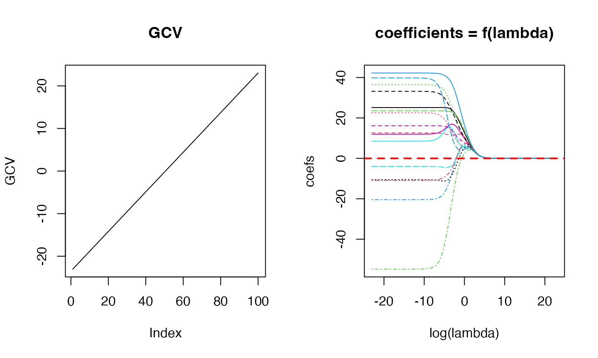

Getting started
getting-started.Rmd
library(MASS)
X <- longley[,-7]
y <- longley[, 7]
fit_obj <- matern32::fit_matern32(x = X, y = y)## Registered S3 method overwritten by 'matern32':
## method from
## predict.poly stats
par(mfrow=c(1, 2))
plot(log(fit_obj$lambda), fit_obj$GCV, type = 'l', main = "GCV",
ylab = "GCV")
matplot(log(fit_obj$lambda), t(fit_obj$coef), type = 'l',
main = "coefficients = f(lambda)", xlab = "log(lambda)",
ylab = "coefs")
abline(h = 0, lty = 2, lwd = 2, col = "red")
summary_fit_obj <- summary(fit_obj)## Response:
## Min. 1st Qu. Median 3rd Qu. Max.
## 60.1710 62.7125 65.5040 68.2905 70.5510
##
## Residuals:
## Min. 1st Qu. Median 3rd Qu. Max.
## -5.479492e-09 -5.612915e-10 1.438529e-09 2.714826e-09 4.223992e-09
##
## 1st order effects:
## Est Std. Error t value Pr(>|t|)
## GNP.deflator 0.38804069 0.11231518 3.4549265 0.0061750027 **
## GNP 0.46864334 0.09713599 4.8246105 0.0006973893 ***
## Unemployed 0.29877987 0.15096718 1.9791049 0.0759856842 .
## Armed.Forces 0.01963802 0.10906456 0.1800586 0.8607029882
## Population 0.41293025 0.09770680 4.2262181 0.0017542634 **
## Year 0.45740785 0.09333162 4.9008883 0.0006222926 ***
## ---
## Signif. codes: 0 '***' 0.001 '**' 0.01 '*' 0.05 '.' 0.1 ' ' 1
##
## Distribution of marginal effects:
## GNP.deflator GNP Unemployed Armed.Forces
## Min. :-8.6203 Min. :-5.8885 Min. :-9.2591 Min. :-4.54804
## 1st Qu.:-0.1580 1st Qu.:-0.1433 1st Qu.:-0.3304 1st Qu.:-0.80442
## Median : 0.4848 Median : 0.5345 Median : 0.2018 Median : 0.00000
## Mean : 0.3880 Mean : 0.4686 Mean : 0.2988 Mean : 0.01964
## 3rd Qu.: 1.2454 3rd Qu.: 1.3997 3rd Qu.: 1.0672 3rd Qu.: 0.63753
## Max. : 4.8282 Max. : 3.6191 Max. : 8.1953 Max. : 5.16689
## Population Year
## Min. :-5.6781 Min. :-5.4276
## 1st Qu.:-0.1696 1st Qu.:-0.1735
## Median : 0.5619 Median : 0.5834
## Mean : 0.4129 Mean : 0.4574
## 3rd Qu.: 1.2177 3rd Qu.: 1.2846
## Max. : 3.9818 Max. : 3.5683
##
## Multiple R-squared: 1 Adjusted R-squared: 1
##
## Residuals Box test: 0.3597019 Residuals Shapiro test: 0.1698543
##
## LOOCV error: 191.2803 lambda: 1e-10
print(summary_fit_obj$coefficients)## Est Std. Error t value Pr(>|t|)
## GNP.deflator 0.38804069 0.11231518 3.4549265 0.0061750027 **
## GNP 0.46864334 0.09713599 4.8246105 0.0006973893 ***
## Unemployed 0.29877987 0.15096718 1.9791049 0.0759856842 .
## Armed.Forces 0.01963802 0.10906456 0.1800586 0.8607029882
## Population 0.41293025 0.09770680 4.2262181 0.0017542634 **
## Year 0.45740785 0.09333162 4.9008883 0.0006222926 ***
print(summary_fit_obj$distro_effects)## GNP.deflator GNP Unemployed Armed.Forces
## Min. :-8.6203 Min. :-5.8885 Min. :-9.2591 Min. :-4.54804
## 1st Qu.:-0.1580 1st Qu.:-0.1433 1st Qu.:-0.3304 1st Qu.:-0.80442
## Median : 0.4848 Median : 0.5345 Median : 0.2018 Median : 0.00000
## Mean : 0.3880 Mean : 0.4686 Mean : 0.2988 Mean : 0.01964
## 3rd Qu.: 1.2454 3rd Qu.: 1.3997 3rd Qu.: 1.0672 3rd Qu.: 0.63753
## Max. : 4.8282 Max. : 3.6191 Max. : 8.1953 Max. : 5.16689
## Population Year
## Min. :-5.6781 Min. :-5.4276
## 1st Qu.:-0.1696 1st Qu.:-0.1735
## Median : 0.5619 Median : 0.5834
## Mean : 0.4129 Mean : 0.4574
## 3rd Qu.: 1.2177 3rd Qu.: 1.2846
## Max. : 3.9818 Max. : 3.5683
X <- as.matrix(Boston[,-14])
y <- Boston[,14]
set.seed(123)
idx_train <- sample.int(dim(X)[1], size=floor(0.8*dim(X)[1]))
fit_obj <- matern32::fit_matern32(x = X[idx_train,], y = y[idx_train], lambda = 0.01)
summary_fit_obj <- summary(fit_obj)## Response:
## Min. 1st Qu. Median 3rd Qu. Max.
## 5.000 17.075 21.200 25.000 50.000
##
## Residuals:
## Min. 1st Qu. Median 3rd Qu. Max.
## -3.03267235 -0.25327394 0.01728901 0.25152124 3.96242412
##
## 1st order effects:
## Est Std. Error t value Pr(>|t|)
## crim -0.015533728 0.003412618 -4.5518504 7.110262e-06 ***
## zn 0.012918168 0.005120576 2.5227961 1.203844e-02 *
## indus -0.093436725 0.005342518 -17.4892686 5.209706e-51 ***
## chas -0.027694166 0.003298692 -8.3955003 8.620455e-16 ***
## nox -0.077653921 0.005197358 -14.9410371 2.982994e-40 ***
## rm 0.002787912 0.006121455 0.4554329 6.490506e-01
## age 0.043679670 0.006295629 6.9380951 1.656900e-11 ***
## dis 0.062018965 0.005839813 10.6200260 2.561189e-23 ***
## rad -0.013714025 0.005353229 -2.5618228 1.078648e-02 *
## tax -0.020752114 0.005214672 -3.9795627 8.229496e-05 ***
## ptratio -0.051585681 0.007020797 -7.3475530 1.187631e-12 ***
## black -0.012671878 0.003726811 -3.4001933 7.427270e-04 ***
## lstat 0.022905821 0.006081373 3.7665545 1.909751e-04 ***
## ---
## Signif. codes: 0 '***' 0.001 '**' 0.01 '*' 0.05 '.' 0.1 ' ' 1
##
## Distribution of marginal effects:
## crim zn indus
## Min. :-33.71609 Min. :-26.25433 Min. :-36.15176
## 1st Qu.: -0.08774 1st Qu.: 0.00000 1st Qu.: -0.51142
## Median : -0.00071 Median : 0.00000 Median : 0.00000
## Mean : -0.01553 Mean : 0.01292 Mean : -0.09344
## 3rd Qu.: 0.05751 3rd Qu.: 0.00000 3rd Qu.: 0.35316
## Max. : 35.56141 Max. : 34.76033 Max. : 39.87066
## chas nox rm
## Min. :-33.02901 Min. :-30.19254 Min. :-39.47099
## 1st Qu.: 0.00000 1st Qu.: -0.53001 1st Qu.: -0.40596
## Median : 0.00000 Median : -0.01607 Median : 0.00379
## Mean : -0.02769 Mean : -0.07765 Mean : 0.00279
## 3rd Qu.: 0.00000 3rd Qu.: 0.38369 3rd Qu.: 0.47967
## Max. : 47.28859 Max. : 48.83468 Max. : 31.30072
## age dis rad
## Min. :-48.99448 Min. :-49.28409 Min. :-48.77398
## 1st Qu.: -0.48461 1st Qu.: -0.38916 1st Qu.: -0.24625
## Median : -0.00854 Median : 0.01820 Median : 0.00000
## Mean : 0.04368 Mean : 0.06202 Mean : -0.01371
## 3rd Qu.: 0.41998 3rd Qu.: 0.53055 3rd Qu.: 0.18253
## Max. : 37.23469 Max. : 45.85877 Max. : 28.94673
## tax ptratio black
## Min. :-28.77790 Min. :-41.98826 Min. :-56.24045
## 1st Qu.: -0.39855 1st Qu.: -0.41279 1st Qu.: -0.08059
## Median : 0.00000 Median : 0.00000 Median : 0.00000
## Mean : -0.02075 Mean : -0.05159 Mean : -0.01267
## 3rd Qu.: 0.31538 3rd Qu.: 0.41205 3rd Qu.: 0.09704
## Max. : 28.95582 Max. : 57.52405 Max. : 38.48930
## lstat
## Min. :-38.85329
## 1st Qu.: -0.49120
## Median : -0.00353
## Mean : 0.02291
## 3rd Qu.: 0.44015
## Max. : 58.95171
##
## Multiple R-squared: 0.9946523 Adjusted R-squared: 0.9944741
##
## Residuals Box test: 0.5072909 Residuals Shapiro test: 9.852929e-17
##
## LOOCV error: 3914.125 lambda: 0.01
print(summary_fit_obj$coefficients)## Est Std. Error t value Pr(>|t|)
## crim -0.015533728 0.003412618 -4.5518504 7.110262e-06 ***
## zn 0.012918168 0.005120576 2.5227961 1.203844e-02 *
## indus -0.093436725 0.005342518 -17.4892686 5.209706e-51 ***
## chas -0.027694166 0.003298692 -8.3955003 8.620455e-16 ***
## nox -0.077653921 0.005197358 -14.9410371 2.982994e-40 ***
## rm 0.002787912 0.006121455 0.4554329 6.490506e-01
## age 0.043679670 0.006295629 6.9380951 1.656900e-11 ***
## dis 0.062018965 0.005839813 10.6200260 2.561189e-23 ***
## rad -0.013714025 0.005353229 -2.5618228 1.078648e-02 *
## tax -0.020752114 0.005214672 -3.9795627 8.229496e-05 ***
## ptratio -0.051585681 0.007020797 -7.3475530 1.187631e-12 ***
## black -0.012671878 0.003726811 -3.4001933 7.427270e-04 ***
## lstat 0.022905821 0.006081373 3.7665545 1.909751e-04 ***
print(summary_fit_obj$distro_effects)## crim zn indus
## Min. :-33.71609 Min. :-26.25433 Min. :-36.15176
## 1st Qu.: -0.08774 1st Qu.: 0.00000 1st Qu.: -0.51142
## Median : -0.00071 Median : 0.00000 Median : 0.00000
## Mean : -0.01553 Mean : 0.01292 Mean : -0.09344
## 3rd Qu.: 0.05751 3rd Qu.: 0.00000 3rd Qu.: 0.35316
## Max. : 35.56141 Max. : 34.76033 Max. : 39.87066
## chas nox rm
## Min. :-33.02901 Min. :-30.19254 Min. :-39.47099
## 1st Qu.: 0.00000 1st Qu.: -0.53001 1st Qu.: -0.40596
## Median : 0.00000 Median : -0.01607 Median : 0.00379
## Mean : -0.02769 Mean : -0.07765 Mean : 0.00279
## 3rd Qu.: 0.00000 3rd Qu.: 0.38369 3rd Qu.: 0.47967
## Max. : 47.28859 Max. : 48.83468 Max. : 31.30072
## age dis rad
## Min. :-48.99448 Min. :-49.28409 Min. :-48.77398
## 1st Qu.: -0.48461 1st Qu.: -0.38916 1st Qu.: -0.24625
## Median : -0.00854 Median : 0.01820 Median : 0.00000
## Mean : 0.04368 Mean : 0.06202 Mean : -0.01371
## 3rd Qu.: 0.41998 3rd Qu.: 0.53055 3rd Qu.: 0.18253
## Max. : 37.23469 Max. : 45.85877 Max. : 28.94673
## tax ptratio black
## Min. :-28.77790 Min. :-41.98826 Min. :-56.24045
## 1st Qu.: -0.39855 1st Qu.: -0.41279 1st Qu.: -0.08059
## Median : 0.00000 Median : 0.00000 Median : 0.00000
## Mean : -0.02075 Mean : -0.05159 Mean : -0.01267
## 3rd Qu.: 0.31538 3rd Qu.: 0.41205 3rd Qu.: 0.09704
## Max. : 28.95582 Max. : 57.52405 Max. : 38.48930
## lstat
## Min. :-38.85329
## 1st Qu.: -0.49120
## Median : -0.00353
## Mean : 0.02291
## 3rd Qu.: 0.44015
## Max. : 58.95171## [1] 2.680429